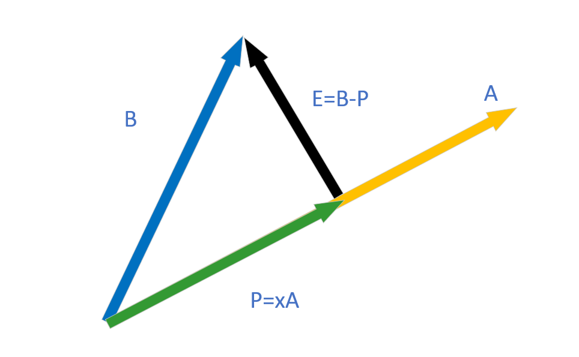
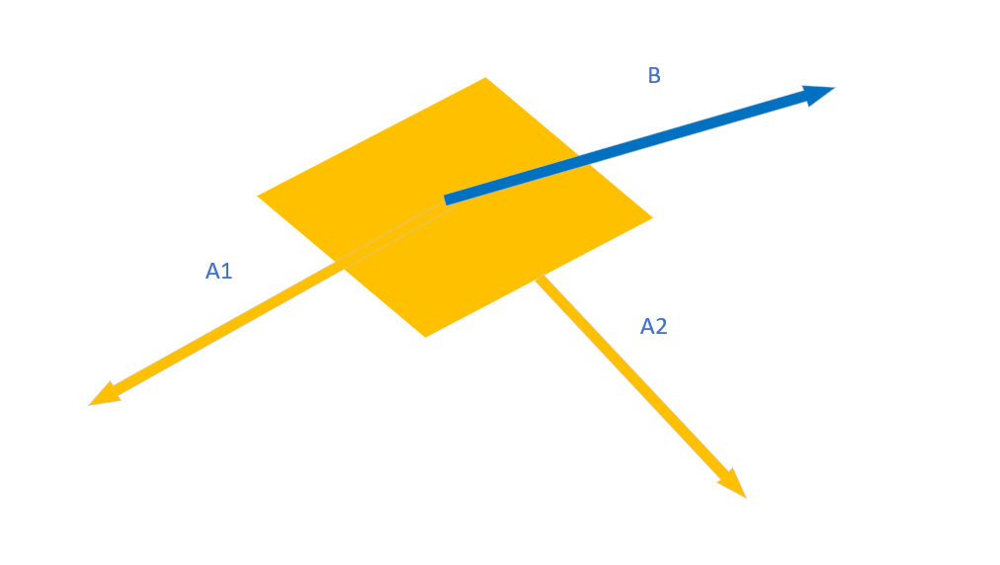

MIT线性代数笔记的第二部分
- 线性相关性与线性空间
- 四个子空间
- 图和网络
- 正交空间与子空间投影
- 求解最小二乘的矩阵
完整链接:
MITLinearAlgebra
MITLinearAlgebra(2)
MITLinearAlgebra(3)
MITLinearAlgebra-4
线性相关性、基、维数
线性无关的是“向量组”而不是矩阵
若矩阵A的m < n
Ax=0 未知数大于方程数，存在某些自由变量，也就是存在零空间的特解，至少n-m个
线性无关
如果向量组的非零系数线性组合不存在零向量，则这一组向量线性无关。易知，零向量与所有向量线性相关。
如果矩阵A的零空间null space包含非零向量，说明他们线性相关。例如二维空间里，三个向量一定是线性相关的，把他们组成一个矩阵A，这是一个2*3矩阵，明显存在自由变量，也就是零空间存在特解。
生成向量空间span
span生成一个空间是使用线性无关向量组去线性组合。这个空间包含这些向量的线性组合。
基，basis，指能够生成向量空间的一组线性无关的向量。
给定向量空间，各组基向量的个数都是一致的。这个个数称作空间维数。
Rank=#pivots columns=dimension of column space
请注意，这里并非是矩阵的维度而是列空间的维度
一个问题：null space的维度是多少？零空间在表示怎样这些列向量能够线性相关。维度是自由变量的数目。
dim N（A）= #free variables = n-r
第十讲-四个基本子空间
- 列空间$C(A)$
- 零空间$N(A)$
- 行空间$C(A^{T})$row space
- 左零空间$N(A^T)$left null space
- 列空间的维度为r，基是主列向量
- 行空间与列空间的维度相同，也是r，基是矩阵R的前r行
- 零空间的维度为n-r，基是自由变量对应自由向量
- 左零空间的维度是m-r，也是能让行向量线性相关得到零向量的一组向量
C(A)和N(A^T)在R^m空间里，N(A)和C(A^T)在R^m中
33的矩阵也可以找出一组基，形成一个矩阵空间，有点像把向量空间扩展到了矩阵空间，我们给他取个更好的名字不如叫*线性空间吧。
矩阵空间 秩1矩阵 小世界图
新空间
all 3 by 3 matrices组成矩阵空间M，里面的矩阵满足加法和数乘，基也是3*3矩阵，9个
也包括各种子空间subspaces: symmetric matrices, upper triangular matrices, lower …
那么这些子空间的维度是多少呢？
对称矩阵S维度为6，对角矩阵维度为3，上三角维度U为6
一个规律
扩展到各种函数的组合，他们都是广义的向量
秩1矩阵
就像积木的基本组成，但是两个秩1矩阵相加不能得到一个确定维度的矩阵，可能秩为1，可能秩为2
小世界图
图graph是点和边的集合，可以用矩阵来表示图的连接
small world小世界是说六度空间理论
图和网络
开始关注线性代数的应用
- Graphs&Networks
- Incidence Matrices关联矩阵
- Kirchhoff’s laws基尔霍夫电流定律
所有实际应用中的矩阵其实都有一些结构特征，在处理矩阵的时候要注意利用这些矩阵的特征。
图的封闭边可以构成一个loop
用关联矩阵表示图：
- 行为有向边edge，列为节点node，出点为-1，入点为1
- 线性相关的几个行向量可以代表环loop
- 关联矩阵的零空间nullspace反应线性相关，也就代表环的组成
$Ax = 0$如果把这个想成电路，x想象成节点上的电势，零空间代表使得各处电势相等的情况。回路的电势差为0。
节点代表电势，边代表电流
基尔霍夫电流定律：$A^Ty=0$各个节点流出的电流和等于流入的电流和。
树是没有环的图，在矩阵中是线性无关的A^T的列空间向量，也就是没能组成环的一堆边
dim(N(A^T)) = m -r
num of loops = #edges-（#nodes-1）
rank=n-1
欧拉公式 #nodes-#edges+#loops=1
使用线性代数证明了欧拉公式
应用数学中的最基本方程
$A^{T}CAx=f$
正交空间
两向量正交
两个向量x, y的正交条件就是内积为0
如果存在两个向量空间S和T, S中的任意向量都与T中的任意向量正交, 则两空间互为正交空间.
零空间和行空间是正交空间, 列空间和左零空间是正交空间
A^TA的重要性质
如果Ax=b无解, 那么如何”求解”出一个解
这种问题在矩阵A, m>n的时候很常见, 方程的个数超过了未知量的个数, 很容易无解(超正定问题?)
A^TA是对称矩阵, 有可能是可逆矩阵,是求解这种无解问题的答案
子空间投影与投影矩阵
先考虑一维的情况

对一维场景来说$A^TB=B^TA$，并且可以用投影矩阵$Proj$来与向量$B$相乘得到投影的量
再来看一下二维乃至N维的情况

这里$A_1$和$A_2$两个向量组成了平面，$B$向量要投影到这个平面空间里，按照上述的一维正交情况，假设投影后的向量$P$用$A1，A2$表示为$P = c_1A_1+c_2A_2$,我们可以迅速写出如下方程
以上两个向量正交的表达化成矩阵形式可以用平面对应的列空间的矩阵A来表示
经过一番移项乘逆矩阵整理
那么这样我们就得到了二维乃至扩展到多维空间上的投影表达式
那么这种投影的用处是什么呢?
对于$Ax=B$, 对于A是瘦长矩阵的情形下, 常常没有解, 也就是B不在A的列空间里面, 那么这时候, 我们把B投影到A的列空间里面, 可以得到一个列空间里最像B的向量, 也就近似解出x
这里不能展开求逆括号，因$A$会存在不可逆的情况, 如果可逆了当然可以展开, 那么就相当于把B投影到一个$R^N$的空间里, 只会得到他自己
这里的投影矩阵具有$Proj^2 = Proj$的性质, 展开即可验证
正交矩阵与Gram-Schmit正交化
正交矩阵的基本定义
正交矩阵的定义是, 其中包含的列向量两两正交(orthonormal vectors)同时每个向量的二范数为1
正交矩阵(符号为Q, orthogonal matrix)能够带来很多优良的性质,比如说当Q是一个方阵的时候$Q^TQ=I$, 再比如Q的投影矩阵是$Q(Q^TQ)^{-1}Q^T = QQ^T$, 形式会比较简单, 再比如对于$Ax=b$A是瘦长矩阵时, 如果A是一个正交矩阵, 两边可以左乘A转置, 左边可以直接化为单位矩阵
同时, $\hat{x}$在第$i$个维度上的投影就等于$q_i^{T}b$
Gram-Schmit方法
Gram负责求解出方向满足要求的vector, Schmit负责把该向量的范数变成1(就是除以范数值即可)
假设现在有a, b两个向量,那么让他们变成orthonormal vector的方法就是Gram-Schmit, a只需要保持原来的方向不变为a’, b减去在a上的投影得到b’就可以做到与a正交, 之后再把a’和b’进行schmit变换就可以(投影矩阵P如上面所讲$b’=b-Pa$)
如果有了第三个向量c, 也想与前两个构成正交矩阵, 则让c减去c在a’和b’上的投影, 以此类推, 每一个新的向量都是基于前述正交基向量来得到的
这部分需要看课本再好好学一学啊